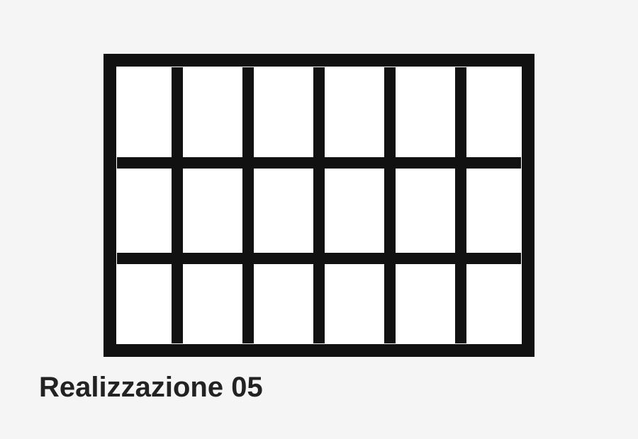
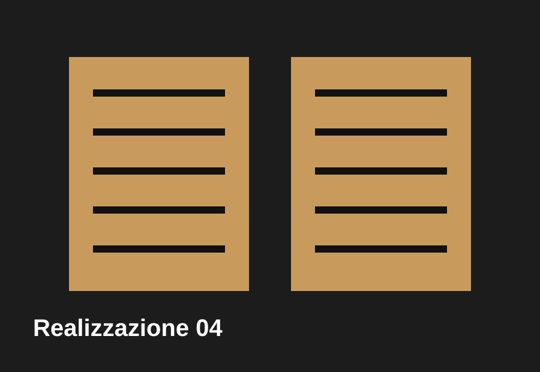
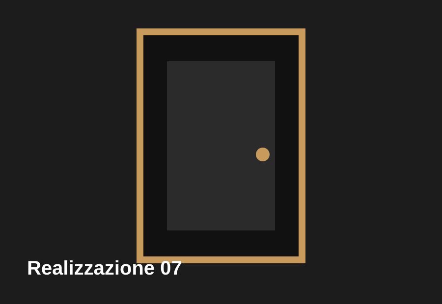

Descrizione
Elementi di sicurezza progettati in base al contesto, alla frequenza d'uso e al livello di protezione richiesto.

Prodotto
Inferriate fisse, apribili e personalizzate per proteggere abitazioni e attività con soluzioni solide e curate.
Richiedi preventivoElementi di sicurezza progettati in base al contesto, alla frequenza d'uso e al livello di protezione richiesto.
Esempi



Descrivi finestre, accessi e livello di protezione desiderato.